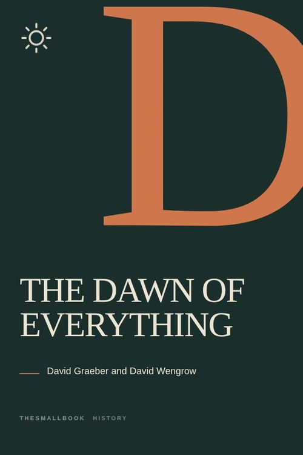

Library › Authors › David Graeber and David Wengrow
Books by David Graeber and David Wengrow
David Graeber and David Wengrow has one book in the library. Every book here is read down to the big idea, the lessons, the lines worth keeping and the actions worth taking. Start with the summary, then buy the full book if it earns a place on your shelf.

The Dawn of Everything
2021 · 11 min · 8 lessons
Graeber and Wengrow argue that prehistory is full of cities without rulers, freedoms we assumed were modern, and societies that chose their arrangements on purpose.
The standard story says simple egalitarian foragers became farmers, then cities, then states, and inequality was the price of civilisation. The archaeological record does not agree. There were monumental gatherings before farming, cities without palaces, and societies that moved between hierarchy and equality by season. The real question is not when inequality began, but why humans keep choosing among arrangements, which means we can choose differently now.
Lessons in the summary
- The Story You Were Told
- Farmers Were Not Trapped
- Cities Without Kings
- Three Kinds of Freedom
- The Indigenous Critique
- Wealth and Care
- Why Inequality Is a Choice
- History as a Laboratory
Lines worth keeping
- The question is not when inequality began, but why people keep experimenting with how to live.
- Many societies moved between hierarchy and freedom on purpose, by season.
- Cities did not require kings. We simply stopped imagining cities without them.
Questions David Graeber and David Wengrow helps answer
Read nearby authors next
- Bill Bryson 2 books
- David Grann 2 books
- Isabel Wilkerson 2 books
- Ramachandra Guha 2 books
- Siddhartha Mukherjee 2 books
- Walter Isaacson 2 books
- William Dalrymple 2 books
- A.L. Basham 1 book
Questions David Graeber and David Wengrow helps answer
Where should I start with David Graeber and David Wengrow? Start with The Dawn of Everything: Graeber and Wengrow argue that prehistory is full of cities without rulers, freedoms we assumed were modern, and societies that chose their arrangements on purpose.